HomeInicio › ContactContacto
Contact and hoursContacto y horario
Call during office hours, or send the request below and the front desk replies the next business day. Hablamos español. Wir sprechen Deutsch.Llame en horario de oficina o envíe la solicitud de abajo y la recepción responde el siguiente día hábil. We speak English. Wir sprechen Deutsch.
Hours and addressHorario y dirección
| MondayLunes | 8:00 a.m. – 5:00 p.m. |
| TuesdayMartes | 8:00 a.m. – 5:00 p.m. |
| WednesdayMiércoles | 8:00 a.m. – 5:00 p.m. |
| ThursdayJueves | 8:00 a.m. – 5:00 p.m. |
| FridayViernes | By appointmentCon cita |
| Saturday and SundaySábado y domingo | ClosedCerrado |
- AddressDirección
- 6390 Cypress Gardens Blvd, Suite B
Winter Haven, FL 33884 - PhoneTeléfono
- (863) 324‑7121
- LanguagesIdiomas
- English · Español · Deutsch
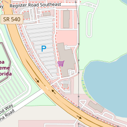
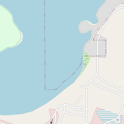
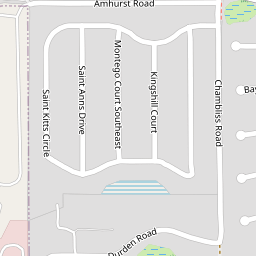
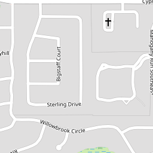
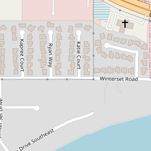
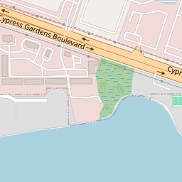
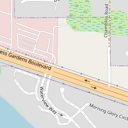
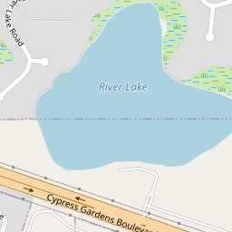
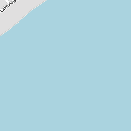

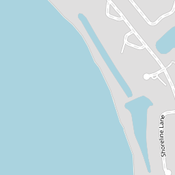
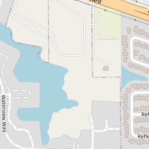
6390 Cypress Gardens Blvd, Suite B, between Lake Eloise and Lake Winterset. Free parking at the door.6390 Cypress Gardens Blvd, Suite B, entre Lake Eloise y Lake Winterset. Estacionamiento gratis en la puerta.
How far are you from the office?¿Qué tan lejos está del consultorio?
Winter Haven is a chain of lakes. Pick the lake you live near and see the approximate drive.Winter Haven es una cadena de lagos. Elija el lago cerca del que vive y vea el trayecto aproximado.
Pain today?¿Dolor hoy?
Don’t use the form. Call as early as you can: same‑day times are kept open Monday to Thursday.No use el formulario. Llame lo antes posible: se reservan horas del mismo día de lunes a jueves.
Insurance and paymentSeguros y pagos
Most PPO plans are accepted and filed for you. CareCredit financing is available for larger plans, with a prequalification that does not affect your credit score.Se aceptan la mayoría de los planes PPO y el consultorio presenta el reclamo. Hay financiamiento CareCredit para planes grandes, con una precalificación que no afecta su puntaje de crédito.
- Visa
- Mastercard
- American Express
- Discover
- CareCredit
- CitiHealth
- Cash and checkEfectivo y cheque
- Most PPO plansLa mayoría de planes PPO
Questions people ask firstLo que la gente pregunta primero
If yours is not here, call or send the form.Si la suya no está aquí, llame o envíe el formulario.
Do you take my insurance?¿Aceptan mi seguro?
Most PPO plans are accepted, and the office files the claim for you. Call with the details on your card and the front desk will check your coverage before you come in. There is no Medicaid or Medicare dental at this time.Se aceptan la mayoría de los planes PPO, y el consultorio presenta el reclamo por usted. Llame con los datos de su tarjeta y la recepción verifica su cobertura antes de su visita. Por ahora no se acepta Medicaid ni Medicare dental.
Can I be seen in Spanish or German?¿Me pueden atender en español o alemán?
Yes. Both doctors speak Spanish, Dr. Polo also speaks German, and the whole visit, from the phone call to the treatment plan, can happen in your language.Sí. Los dos doctores hablan español, el Dr. Polo también habla alemán, y toda la visita, desde la llamada hasta el plan de tratamiento, puede ser en su idioma.
What if I have a toothache today?¿Y si tengo dolor de muela hoy?
Call (863) 324‑7121 as early as you can. Same‑day times are kept open for emergencies, Monday to Thursday, and patients have been seen the same day without an appointment.Llame al (863) 324‑7121 lo antes posible. Se reservan horas del mismo día para urgencias, de lunes a jueves, y hay pacientes que han sido atendidos el mismo día sin cita.
How can I pay, and is there financing?¿Cómo puedo pagar, y hay financiamiento?
Cash, check, Visa, Mastercard, American Express and Discover are accepted. CareCredit financing is available, with a prequalification that does not affect your credit score. Every plan comes with its cost written down before anything starts.Se acepta efectivo, cheque, Visa, Mastercard, American Express y Discover. Hay financiamiento con CareCredit, con una precalificación que no afecta su puntaje de crédito. Cada plan viene con su costo por escrito antes de empezar.
Can a dentist really treat sleep apnea?¿Un dentista puede tratar la apnea del sueño?
For many people with mild to moderate obstructive sleep apnea, yes. A custom oral appliance holds the lower jaw slightly forward so the airway stays open. It is fitted here after a sleep study, and adjusted until it is comfortable.Para muchas personas con apnea obstructiva leve a moderada, sí. Un aparato bucal a medida sostiene la mandíbula un poco hacia adelante para que la vía aérea quede abierta. Se ajusta aquí después de un estudio del sueño, hasta que sea cómodo.